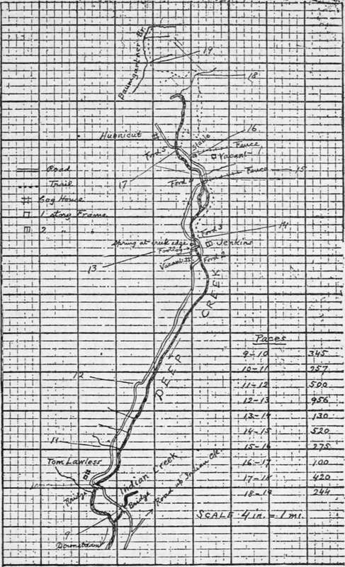
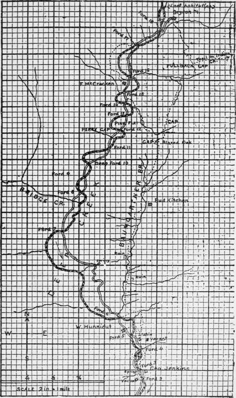

Chapter VI. Route Sketching. Mapping. Measuring
Description
This section is from the book "Camping And Woodcraft", by Horace Kephart. Also available from Amazon: Camping and Woodcraft.
Chapter VI. Route Sketching. Mapping. Measuring
Among the pleasures of life in a wild country 1 count first the thrill of exploring new ground. "Something hidden: go and find it!" He who does not respond to that mainspring is out of order—> his works need looking into.
Of course, the whole earth has been rambled over by somebody before our time; but it suffices one of us to bore into some wild region that is unknown to himself, unknown to his companions, and which never has been mapped in detail.
I used to go hunting, every fall, with two or three comrades who felt as I did about such matters. We never hired a guide. On arriving at a blank spot we would spend the first day or two scouting. We would scatter, scour the country, and then, around the camp fire at night, we would describe, in turn, what we had found.
Verbal reports, such as these, are more entertaining than useful. The crudest sort of a sketch on paper would have taught us much more. By combining our route sketches we might have produced a serviceable map of the country for miles around. I wish we had made such maps. I would love to pore over them in these later years.
We thought that route sketching would take too much time and trouble. That was a mistake. Anybody who can read a compass and draw lines of direction can make a practical route sketch without losing more than twentv-five per cent of a steady jog. The only instruments and materials needed are a pocket compass, a watch, a lead pencil, and a notebook, or a bit of paper tacked on a piece of thin board.
Fig. 14. Route sketch showing method of computing distances by counting paces from point to point.
As examples, I give here a couple of sketches (Figs. 14 and 15) showing, respectively, the back-Ivoods half of the wagon road and the over-mountain trail to "the last house up Deep Creek," where I once lived for a year or so. I made these while still new to the country, without losing more than half an hour from regular marching time. First, I walked in to the railway station, pacing and sketching the trail as I went. The next day I returned by wagon, mapping the road and the creek, without once checking the horses, and judging distances altogether by eye.
My rough sketches were made in a vest-pocket memorandum book that was quadrille ruled. Mere lines showed the road, trail, creek, and branches, as in Fig. 14, and the sketch map was finished on larger paper when I got home. My compass had a dial of only 1 1/8 inch, which is small for such work. I wore it in a leather strap on my left wrist, like a wrist watch; so it never was in the way, yet always was right under the eye when needed. To orient the instrument, it could be slipped out of its guard in a second or two, though this was seldom necessary.
Afterwards I discarded this way of carrying a compass, because it had to be open-faced and was too easily smashed.
Considering that the country here was rough, and so densely timbered that there were few outlooks, and that I did not use a protractor nor even a ruler, I was pleased to find that my "closures" required very little "humoring in," as a surveyor would say. I had a U. S. topographical map of the country, but it was so defective that it was of no use, save in establishing one or two "controls".
In sketching a route it is convenient, though not necessary, to use paper ruled in little squares. Any dealer in draughting materials can supply cross-section paper ruled ten lines to the inch. A piece of such paper, about 7 x 10 inches, tacked on a thin board and carried in the hand, is a good way. If this is too cumbersome, use a notebook, as I did, and, when you come to an edge of the paper, start anew on a fresh page. If you have nothing but plain paper, a measuring instrument must be used, which need be no more than your octagonal lead pencil on which you have scored two or three inches with their subdivisions.
Fig. 15. Mao made by combining two route sketches.
If you are merely plotting a course, it is not necessary to sketch in so many topographic features as are shown in these examples. In any case it is a mistake to crowd the sheet with details, as they might be confusing. In the present instance the route ran through a mountainous country, but I made no attempt to show contours, nor even to note the steep slopes, for there was a trail all the way. I did note, separately, the marching time from point to point (not shown in sketches), and that is important. The time table of actual marching, in connection with the plotted route, showed plainly enough where the going was slow.
Scale Of Sketch
The first thing to do is to fix on a certain scale to be used in plotting. In Fig. 14 it is four inches to a mile, meaning that four inches on the map corresponds to a mile on the ground itself. Therefore a side of each of the little 1-10 inch squares represents 44 yards of actual distance. In Fig. 15 it is two inches to the mile. (The cuts in this book are reduced from the originals). Sometimes it may be more convenient to use a man's pace or a horse's stride as the unit of a scale. In any case, the scale adopted must be noted on the margin of the paper, and an arrow must be drawn on the map to show the true north and south line.
Pacing Distances
When traveling afoot, distances are judged by counting one's paces. A man's normal stride varies from 27 to 33 inches, according to individuals and nature of ground. Woodsmen commonly exceed this, owing to their rolling gait. The conventional surveyor's pace is 30 inches, and so is that of infantry "quick time." Do not try to pace yards, or any other arbitrary distance. That is unnatural, fatiguing, distracts your attention, and cannot be kept up on a long hike. Walk at your natural stride back and forth over a measured distance, and average the results. Do this after a long walk, for by that time you will have "struck your gait." Practice first over fairly level ground, and then up and down steep places, learning to make allowances, by lengthening out a little when going up-hill and shortening the stride when going downhill.
Continue to:
- prev: Blazes Survey Lines. Use Of The Compass. Part 5
- Table of Contents
- next: Route Sketching. Mapping. Measuring. Continued